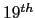

For the RT06s evaluation a total of 23 systems were presented in
the multiple tasks and subtasks proposed. Each system uses one or
more of the improvements presented in this thesis. The common
characteristics of all systems are:
- Frontend composed of at least an acoustic stream with
 order MFCC, no deltas, 30 msec analysis window, 10 msec
step size.
- Each initial cluster is modeled with a GMM with five
Gaussian mixtures.
- Iterative segmentation/training.
- segment purification is not used in any system.
- a hybrid energy/model based speech/non-speech detector is
used instead of last year's model-based pre-trained system.
In the following list the main characteristics of the systems
presented are explained. Across tasks, systems with the same ID
are equal or very similar, just differing on a few parameters.
Their characteristics are:
- p-wdels:
- This is the primary system presented this
year for all multi-microphone conditions. It uses most of the
proposed improvements of this thesis, and all changes in the
diarization code from last year's evaluation.
- c-newspnspdelay:
- This system is presented for the
multi-microphone cases and is composed of RT05s evaluation code
using the new filter&sum algorithm, this year's hybrid
speech/non-speech detector and taking advantage of the delays for
clustering. It uses a minimum duration of 3 seconds, 1/5 initial
Gaussian mixtures for delays/acoustics and a split weight of
0.1/0.9 between the streams fixed for all meetings. It is intended
to compare the improvements of using delays in the system compared
to last year's performance.
- c-wdelsfix:
- This system is identical to p-wdels in
all parts except the decision of the initial number of clusters,
which is fixed to 16 and 10 clusters for conference and lecture
rooms, respectively. It intends to compare the robustness of the
initial number of clusters selection.
- c/p-nodels:
- This system contains all of RT06s
improvements with respect to filter&sum (when available, in MDM),
speech/non-speech detection and other diarization algorithms
except the inclusion of the delays as an extra feature stream.
- c-oldbase:
- This system uses all improvements in
filter&sum (when available, in MDM) and speech/non-speech
detection while using the RT05s core speaker diarization system.
It is meant to serve as a baseline result for RT06s systems.
- c-guessone:
- This system guesses one speaker for
all of the show. In RT05s this was presented as the primary system
for lecture room data, showing the need to beat this system in
order to think of speaker diarization in the lecture data as a
reasonable task. In RT06s it is also presented as a baseline
lecture-room system to be compared with the other lecture-room
systems.
Subsections
user
2008-12-08